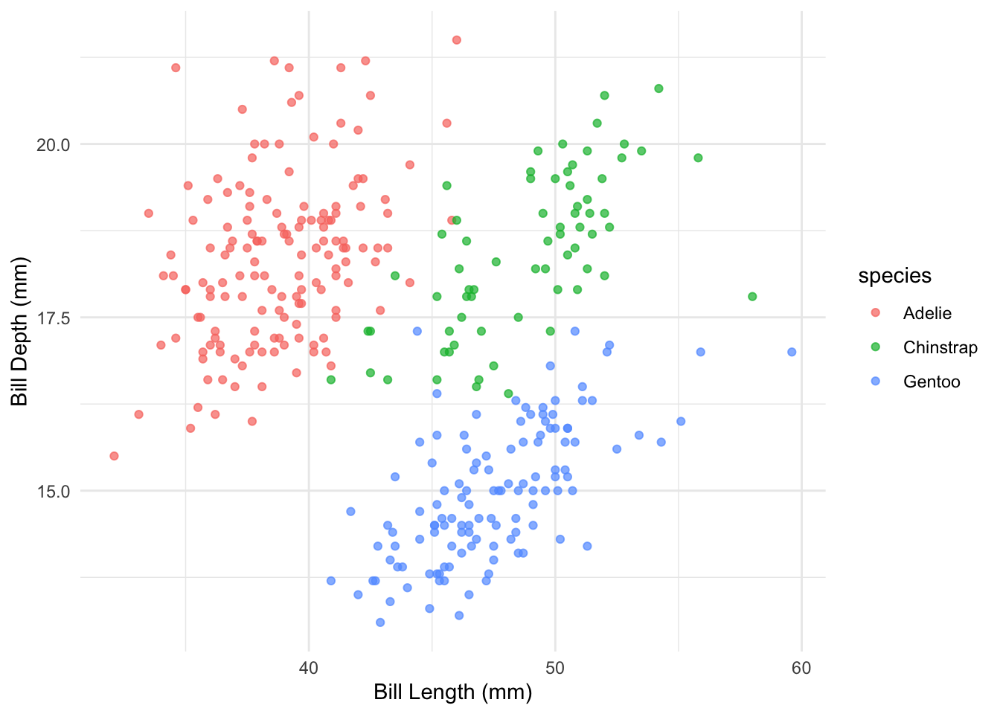

library(tidyverse)
library(palmerpenguins)
ggplot(penguins, aes(x = bill_length_mm, y = bill_depth_mm, color = species)) +
geom_point(alpha = 0.7) +
theme_minimal() +
labs(x = "Bill Length (mm)", y = "Bill Depth (mm)")

Academic publishing requires precision, consistency, and proper attribution. Quarto excels in these areas by providing:
For academic documents, your YAML header often needs more details:
---
title: "Analysis of Penguin Morphology in the Antarctic Region"
author:
- name: "Your Name"
affiliation: "Your University"
email: "your.email@university.edu"
orcid: "0000-1234-5678-9101"
- name: "Co-Author Name"
affiliation: "Their University"
format:
pdf:
documentclass: article
classoption: [twocolumn, 11pt]
toc: true
number-sections: true
cite-method: biblatex
bibliography: references.bib
csl: apa.csl
abstract: |
This is the abstract of your paper. It should be concise and explain the main
findings of your work in about 150-250 words.
keywords: [keyword1, keyword2, keyword3]
---This header provides complete metadata for academic publishing, including proper author information, citation style, and document formatting.
The first step is to link your bibliography file in the YAML header:
bibliography: references.bib
csl: journal-of-ecology.cslbibliography: Points to your BibTeX or CSL JSON filecsl: (Optional) Specifies the Citation Style Language fileYour BibTeX file contains all your references in a structured format. Here’s a sample:
@article{smith2023,
author = {Smith, John and Johnson, Sarah},
title = {Analysis of Antarctic Penguin Species Distribution},
journal = {Journal of Antarctic Biology},
volume = {45},
number = {2},
pages = {112-128},
year = {2023},
doi = {10.1234/jab.2023.45.2.112}
}
@book{wilson2020,
author = {Wilson, Maria},
title = {Ecological Methodologies in Polar Regions},
publisher = {Cambridge Academic Press},
year = {2020},
isbn = {978-3-16-148410-0}
}Once your bibliography is set up, citing sources is straightforward:
According to @smith2023, penguin populations have declined in recent years.
Multiple studies [@smith2023; @wilson2020] have documented this trend.
As Wilson noted [-@wilson2020], methodology is critical in polar research.These render as:
“According to Smith and Johnson (2023), penguin populations have declined in recent years.”
“Multiple studies (Smith and Johnson, 2023; Wilson, 2020) have documented this trend.”
“As Wilson noted (2020), methodology is critical in polar research.”
Academic papers often require complex mathematical notation. Quarto uses LaTeX syntax for equations:
For inline equations, use single dollar signs:
The probability is given by $P(X > x) = \int_x^{\infty} f(t) \, dt$For standalone equations, use double dollar signs:
$$
\begin{align}
\frac{\partial f}{\partial x} = \lim_{h \to 0} \frac{f(x + h) - f(x)}{h}
\end{align}
$$Cross-references help readers navigate your document. Quarto makes this simple with labels and references:
library(tidyverse)
library(palmerpenguins)
ggplot(penguins, aes(x = bill_length_mm, y = bill_depth_mm, color = species)) +
geom_point(alpha = 0.7) +
theme_minimal() +
labs(x = "Bill Length (mm)", y = "Bill Depth (mm)")You can then reference this figure: “As shown in Figure 23.1, the bill dimensions clearly differentiate species.”
You can reference sections using their headers:
## Data Collection Methodology {#sec-methodology}
... content ...
As described in @sec-methodology, our approach controls for seasonal variation.For numbered equations you can reference later:
$$
\begin{align}
E = mc^2 \tag{1}\label{eq-einstein}
\end{align}
$$
As shown in Equation @eq-einstein, energy and mass are equivalent.